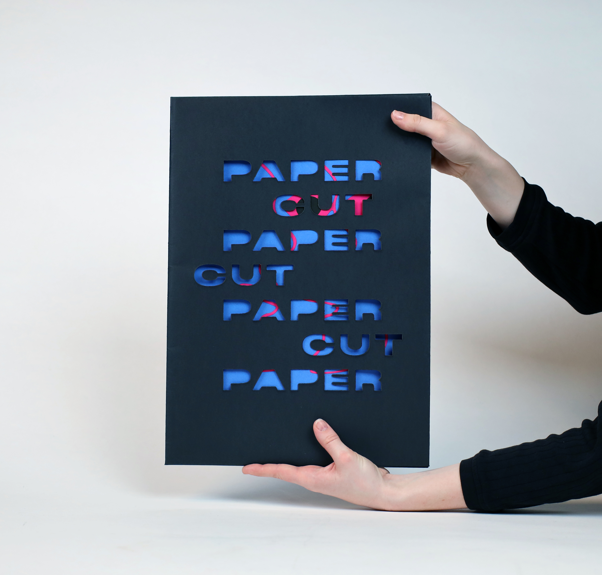
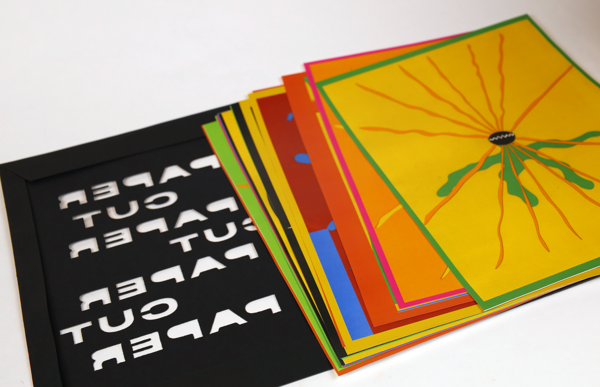
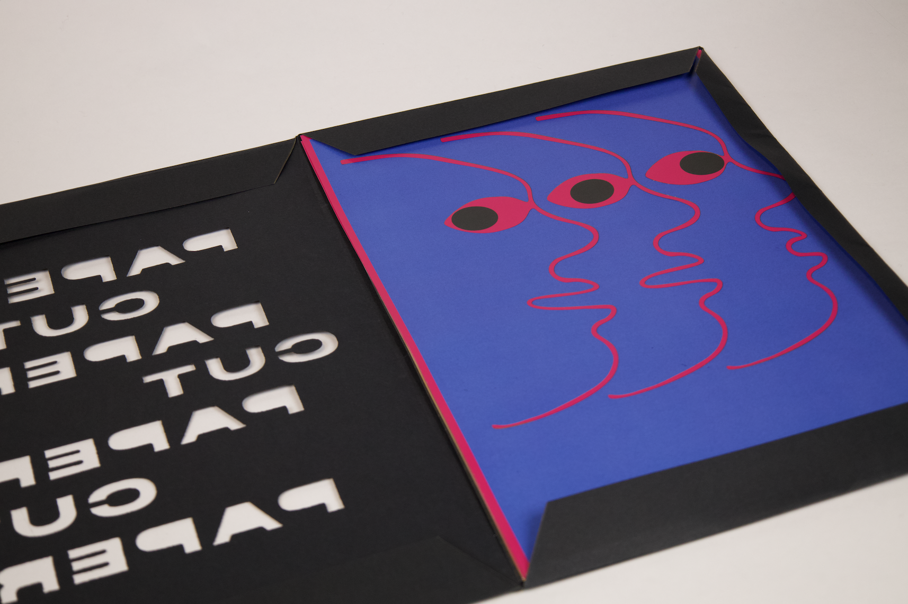

Paper Cut poster folio
Exploring negative space through cutouts and scanning: a poster folio that visualises the energy of acid house music.
2024 · Graphic Designer

CONCEPT
Acid house is built on repetition, layering, and hypnotic patterns. Cutout and negative-space techniques share those same qualities: each cut layer acts like a track element, building into a whole composition. The technique makes the absence as important as the presence, much like how silence and space define the music.
PROCESS
Started with sketches translated into physical cutouts using an X-Acto knife on coloured paper. Each layer was cut separately, then composed and scanned. The physical cuts were digitised and arranged into compositions that captured the rhythmic, layered energy of the music. Some elements were hand-drawn before cutting; others were cut directly with only a mental composition in mind.
MATERIALS / FORMAT
Physical paper cutouts on coloured paper, scanned and reproduced as an A3 poster folio. Set of six posters exploring different visual motifs.
REFLECTION
The analogue-to-digital process revealed interesting parallels with my Blackbox thesis work: both involve a tension between control and unpredictability. The hand-cut imperfections became part of the visual language, just as glitches shaped the Blackbox output. Letting go of precision in the cutting phase opened up compositions I wouldn't have arrived at digitally.


